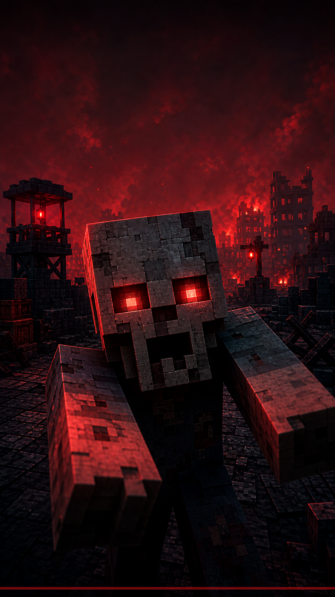
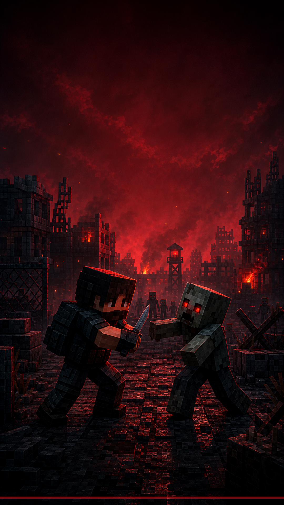

Игрушечное оружие
Пистолеты, автоматы, дробовики, пулемёты, прицелы и десятки типов патронов.
MINECRAFT 1.20.1 · FORGE
Сервер зомби-апокалипсиса
Трое могут убежать. Выживет тот, кто найдёт оружие, укрепит базу и не останется один после заката.
МИР ПОСЛЕ КАТАСТРОФЫ
Исследуйте разрушенные города, больницы, лаборатории и военные объекты. Ищите патроны и лекарства, стройте защищённую базу, заводите транспорт и держитесь вместе, когда начинается ночная орда.
Пистолеты, автоматы, дробовики, пулемёты, прицелы и десятки типов патронов.
Военные, заражённые, учёные и редкие опасные виды зомби с разным поведением.
Развалины, школы, заводы, бункеры, лаборатории и лутаемые останки выживших.
Закрепляйте территорию, объединяйтесь с игроками и защищайте накопленные ресурсы.
Поезда, автомобили, мотоциклы, самолёты, вертолёты и механизмы Create.
PvP в обычном мире отключён. Для честного боя используйте команду /arena.
Слышимость зависит от расстояния. Договаривайтесь тихо — заражённые рядом.
Лаунчер сам проверяет сборку, скачивает новые моды и удаляет устаревшие файлы.
ИСТОРИИ ВЫЖИВШИХ


ПЕРВЫЙ ЗАПУСК
Один EXE для Windows. Java и Forge отдельно устанавливать не нужно.
Выберите PNG-скин при желании и запустите игру без лицензии или через официальный аккаунт.
Используйте /register пароль пароль. При следующих входах — /login пароль.
ГОТОВЫ ВЫЖИВАТЬ?
Лаунчер установит Minecraft 1.20.1, Forge, моды и русские ресурсы. Следующие обновления придут автоматически.